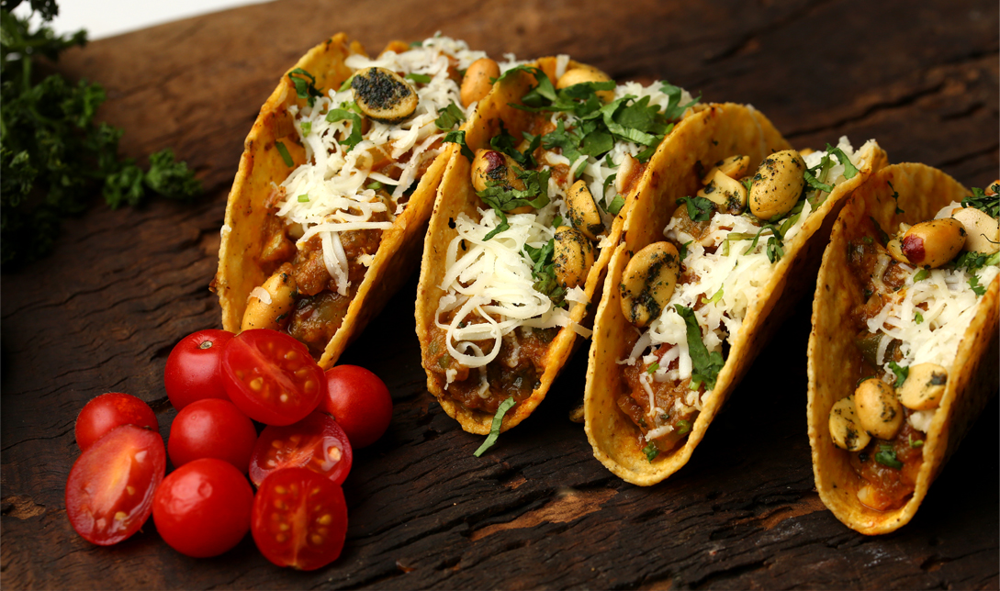

Mexican Tacos
These Mexican tacos are delicious and easy to make! They're perfect for a casual meal or a party.
Ingredients:
- 1 pound ground beef
- 1 onion, chopped
- 1 green pepper, chopped
- 1 can (15 ounces) tomato sauce
- 1 can (1.25 ounces) taco seasoning mix
- 12 corn tortillas
- Shredded cheddar cheese, for serving
- Sour cream, for serving
- Lettuce, for serving
- Tomatoes, for serving
Instructions:
- In a large skillet, brown the ground beef over medium heat.
- Add the onion and green pepper and cook until softened, about 5 minutes.
- Add the tomato sauce, taco seasoning mix, and 1/2 cup water.
- Bring to a boil, then reduce heat and simmer for 10 minutes, or until the sauce has thickened.
- Warm the corn tortillas in the microwave or in a skillet over medium heat.
- To assemble the tacos, spread some of the beef mixture on each tortilla.
- Top with shredded cheddar cheese, sour cream, lettuce, and tomatoes.
- Serve immediately.